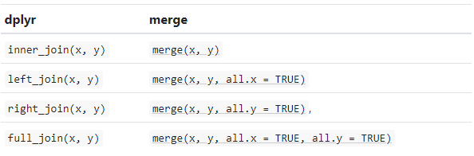
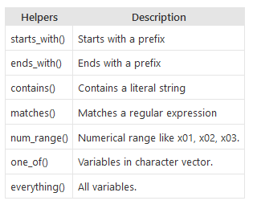

Table of Content
Data Wrangling
Data wrangling, also known as data munging, is a series of assembling, cleaning, and transforming processes to understand data better and make them more accessible and easier to analyze. Due to the availability of a large amount of data from different sources with different formats, data wrangling has become an essential part of data modeling which helps data scientists fasten the decision-making process.
Here below 6 steps data wrangling:
Discovering: The first step in data wrangling is analyzing the data before imputing the data. Wrangling needs to be done in a systematic fashion, based on some criteria which could demarcate and divide the data accordingly – these are identified in this step.
Structuring: In most cases, the raw data extracted as user information generally doesn’t have structured data. The data should be restructured in a fashion that better suits the analytical method used. Based on the category identified in the first step, the data should be segregated to make use easier. For better analysis we have to select one column that may become two or rows may be split, this is also called feature engineering.
Cleaning: Processed datasets definitely have some outliers, which can skew the results of the analysis. The dataset should be cleaned for optimum results. In this step, the data is cleaned thoroughly for high-quality data analysis. Null values should be imputed, and the formatting will be standardized to create higher quality processed data
Enriching: After processing the data, it will have to be enriched – this is performed in the fourth step. This implies that you one has to take stock of what is in the data and strategize whether you have upscale, downsample, or perform data augmentation. There are different methods to resample the data, one downsampling the data, and the other creating synthetic data using upsampling.
Validating: Validation refers to iterative programming steps that are used to verify the consistency and the quality of data after processing. For example, you will have to ascertain whether the fields in the data set are accurate via validating data, or checking whether the attributes are normally distributed.
Publishing: The processed and wrangled data is published so that it can be used further – which is the sole purpose of data wrangling. If needed, the complete data wrangling process should be documented efficiently for the users and clients for easy usage.
Important R Packages for Data Wrangling
dplyr, purr, tidyr, lubridate, and magrittr are installed with tidyverse package as discussed before.
Data Processing with dplyr and tidyr
The dplyr and tidyr are the most commonly use data manipulation packages, providing a set of functions that help us solve the most common data manipulation challenges. These are:
mutate() adds new variables that are functions of existing variables
select() picks variables based on their names.
filter() picks cases based on their values.
summarise() reduces multiple values down to a single summary.
arrange() changes the ordering of the rows.
join() join two data-frames
group_by() All above combine naturally with group_by() which allows you to perform any operation “by group”.
Here below data Wrangling with dplyr and tidyr Cheat Sheets:


Load Package
library(tidyverse)
library(data.table)
library(DT)
#require(plyr)
# library(dplyr)
# library(readr)Load data
In this exercise we will use two data sets: USA county level lung cancer mortality rates with risk factors from 1998 t0 2012 and USA County FIPS Codes. We will use read_csv() function of readr package to import data a Tidy data.
## Create a data folder
dataFolder<-"E:/Dropbox/GitHub/chemstat-r-github.io/Data/"
df<-read_csv(paste0(dataFolder,"LBC_data.csv"))
fips<-read_csv(paste0(dataFolder, "US_FIPS.csv"))
regions<-read_csv(paste0(dataFolder, "US_regions.csv"))We examine structure of the data:
str(df); ## spc_tbl_ [46,605 × 8] (S3: spec_tbl_df/tbl_df/tbl/data.frame)
## $ FIPS : num [1:46605] 1001 1001 1001 1001 1001 ...
## $ Year : num [1:46605] 1998 1999 2000 2001 2002 ...
## $ SMOKING : num [1:46605] 27 26 26 26.5 26.6 26.3 27.1 26.4 26.3 25.6 ...
## $ POVERTY : num [1:46605] 11.3 11.4 10.5 10.8 10.3 10.4 11.6 10.4 12.5 10.4 ...
## $ PM25 : num [1:46605] 17.1 15.4 14 13.9 14.8 ...
## $ NO2 : num [1:46605] 1.38 1.04 1.47 1.74 1.1 0.9 1.1 1.17 0.84 0.77 ...
## $ SO2 : num [1:46605] 0.057 0.055 0.054 0.051 0.052 0.053 0.05 0.055 0.055 0.056 ...
## $ LBC_RATE: num [1:46605] 90.6 90.4 89.5 89.3 89.2 ...
## - attr(*, "spec")=
## .. cols(
## .. FIPS = col_double(),
## .. Year = col_double(),
## .. SMOKING = col_double(),
## .. POVERTY = col_double(),
## .. PM25 = col_double(),
## .. NO2 = col_double(),
## .. SO2 = col_double(),
## .. LBC_RATE = col_double()
## .. )
## - attr(*, "problems")=<externalptr>take a glimpse of the df dataset:
glimpse(df)## Rows: 46,605
## Columns: 8
## $ FIPS <dbl> 1001, 1001, 1001, 1001, 1001, 1001, 1001, 1001, 1001, 1001, 1…
## $ Year <dbl> 1998, 1999, 2000, 2001, 2002, 2003, 2004, 2005, 2006, 2007, 2…
## $ SMOKING <dbl> 27.0, 26.0, 26.0, 26.5, 26.6, 26.3, 27.1, 26.4, 26.3, 25.6, 2…
## $ POVERTY <dbl> 11.3, 11.4, 10.5, 10.8, 10.3, 10.4, 11.6, 10.4, 12.5, 10.4, 1…
## $ PM25 <dbl> 17.08, 15.38, 14.04, 13.87, 14.85, 13.88, 12.61, 12.59, 12.92…
## $ NO2 <dbl> 1.38, 1.04, 1.47, 1.74, 1.10, 0.90, 1.10, 1.17, 0.84, 0.77, 0…
## $ SO2 <dbl> 0.057, 0.055, 0.054, 0.051, 0.052, 0.053, 0.050, 0.055, 0.055…
## $ LBC_RATE <dbl> 90.63, 90.39, 89.47, 89.30, 89.15, 87.26, 84.98, 85.56, 84.34…Pipe Operator
Before starting this tutorial, I like to brief you about the Pipe Operator. This is the most important operator for data wrangling in R. The pipe operator, written as %>%, has been a longstanding feature of the magrittr package for R. It takes the output of one function and passes it into another function as an argument. This allows us to link a sequence of analysis steps. In this tutorial, you can see exactly how this works in a real example. (Source:https://towardsdatascience.com/an-introduction-to-the-pipe-in-r-823090760d64)
Join
In R we use base::merge() function to merge two dataframes. This function is present inside join() function of dplyr package. The most important condition for joining two dataframes is that the column type should be the same of “key” variable by the merging happens. Types of base::merge() and join() function of dplyr available in R are:
The advantages of the specific dplyr verbs is that they It automatic identify the common “key” columns of two data-frames. dplyr’s joins are considerably faster and don’t mess with the order of the rows. (source: https://r4ds.had.co.nz/relational-data.html) .
First we will join fips and regions file using inner_join()* and then join df files.
fips_df = inner_join(fips, regions)## Joining, by = "STATE"head(fips_df)## # A tibble: 6 × 7
## FIPS STATE COUNTY X Y REGION DIVISION
## <dbl> <chr> <chr> <dbl> <dbl> <chr> <chr>
## 1 1001 Alabama Autauga County 872679. 1094433. South East South Central
## 2 1003 Alabama Baldwin County 789778. 884557. South East South Central
## 3 1005 Alabama Barbour County 997211. 1033024. South East South Central
## 4 1007 Alabama Bibb County 822862. 1141554. South East South Central
## 5 1009 Alabama Blount County 863725. 1255735. South East South Central
## 6 1011 Alabama Bullock County 964067. 1055199. South East South Centralmf = inner_join(fips_df, df)## Joining, by = "FIPS"head(mf)## # A tibble: 6 × 14
## FIPS STATE COUNTY X Y REGION DIVIS…¹ Year SMOKING POVERTY PM25
## <dbl> <chr> <chr> <dbl> <dbl> <chr> <chr> <dbl> <dbl> <dbl> <dbl>
## 1 1001 Alabama Autaug… 8.73e5 1.09e6 South East S… 1998 27 11.3 17.1
## 2 1001 Alabama Autaug… 8.73e5 1.09e6 South East S… 1999 26 11.4 15.4
## 3 1001 Alabama Autaug… 8.73e5 1.09e6 South East S… 2000 26 10.5 14.0
## 4 1001 Alabama Autaug… 8.73e5 1.09e6 South East S… 2001 26.5 10.8 13.9
## 5 1001 Alabama Autaug… 8.73e5 1.09e6 South East S… 2002 26.6 10.3 14.8
## 6 1001 Alabama Autaug… 8.73e5 1.09e6 South East S… 2003 26.3 10.4 13.9
## # … with 3 more variables: NO2 <dbl>, SO2 <dbl>, LBC_RATE <dbl>, and
## # abbreviated variable name ¹DIVISIONNow we will move REGION, DIVISION column after FIPS for organizing the columns in the following order: FIPS, REGION, DIVISION, STATE, COUNTY, X, Y, Year, SMOKING, POVERTY, PM25, NO2, SO2, LBC_RATE. We will use relocate() function:
mf<-relocate(mf, REGION, DIVISION, .after = FIPS)
head(mf)## # A tibble: 6 × 14
## FIPS REGION DIVISION STATE COUNTY X Y Year SMOKING POVERTY PM25
## <dbl> <chr> <chr> <chr> <chr> <dbl> <dbl> <dbl> <dbl> <dbl> <dbl>
## 1 1001 South East Sout… Alab… Autau… 8.73e5 1.09e6 1998 27 11.3 17.1
## 2 1001 South East Sout… Alab… Autau… 8.73e5 1.09e6 1999 26 11.4 15.4
## 3 1001 South East Sout… Alab… Autau… 8.73e5 1.09e6 2000 26 10.5 14.0
## 4 1001 South East Sout… Alab… Autau… 8.73e5 1.09e6 2001 26.5 10.8 13.9
## 5 1001 South East Sout… Alab… Autau… 8.73e5 1.09e6 2002 26.6 10.3 14.8
## 6 1001 South East Sout… Alab… Autau… 8.73e5 1.09e6 2003 26.3 10.4 13.9
## # … with 3 more variables: NO2 <dbl>, SO2 <dbl>, LBC_RATE <dbl>Now explore regions names with levels()
levels(as.factor(mf$REGION))## [1] "Midwest" "Northeast" "South" "West"Filter
The filter() function is used to subset a data frame, retaining all rows that satisfy your conditions. To be retained, the row must produce a value of TRUE for all conditions. Note that when a condition evaluates to NA the row will be dropped, unlike base subsetting with
There are many functions and operators that are useful when constructing the expressions used to filter the data:
==, >, >= etc
&, |, !, xor()
is.na()
between(), near()
We will use filter() to extract data only for northeast (single criteria)
mf.northeast<-mf %>% filter(REGION == "Northeast")
levels(as.factor(mf.northeast$REGION))## [1] "Northeast"Filtering by multiple criteria within a single logical expression - select both Northeast and Midwest
mf.north_mid_01<- mf %>% filter(REGION %in%c("Northeast","Midwest"))
levels(as.factor(mf.north_mid_01$REGION))## [1] "Midwest" "Northeast"or we can use | which represents OR in the logical condition, any of the two conditions.
mf.north_mid_02<- mf %>% filter(REGION == "Northeast" | REGION == "Midwest")
levels(as.factor(mf.north_mid_02$REGION))## [1] "Midwest" "Northeast"Following filter create a files for the Northeast region only with NY state.
mf.ny<-mf %>% filter(REGION == "Northeast" & STATE == "New York")Following filters will select counties rows where
LBC_RATE is greater than the global average of LBC -
rate:
mean.LBC <- mf %>% filter(LBC_RATE > mean(LBC_RATE, na.rm = TRUE))We will & in the following filters to select
counties or rows where LBC_RATE is greater than the global
average of for the year 2012
mean.LBC.2012 <- mf %>% filter(LBC_RATE > mean(LBC_RATE, na.rm = TRUE) & Year ==2012)Following command will select counties start with “A”. filter() with grepl() is used to search for pattern matching.
counties.a <- mf %>% filter(grepl("^A", COUNTY))
head(counties.a)## # A tibble: 6 × 14
## FIPS REGION DIVISION STATE COUNTY X Y Year SMOKING POVERTY PM25
## <dbl> <chr> <chr> <chr> <chr> <dbl> <dbl> <dbl> <dbl> <dbl> <dbl>
## 1 1001 South East Sout… Alab… Autau… 8.73e5 1.09e6 1998 27 11.3 17.1
## 2 1001 South East Sout… Alab… Autau… 8.73e5 1.09e6 1999 26 11.4 15.4
## 3 1001 South East Sout… Alab… Autau… 8.73e5 1.09e6 2000 26 10.5 14.0
## 4 1001 South East Sout… Alab… Autau… 8.73e5 1.09e6 2001 26.5 10.8 13.9
## 5 1001 South East Sout… Alab… Autau… 8.73e5 1.09e6 2002 26.6 10.3 14.8
## 6 1001 South East Sout… Alab… Autau… 8.73e5 1.09e6 2003 26.3 10.4 13.9
## # … with 3 more variables: NO2 <dbl>, SO2 <dbl>, LBC_RATE <dbl>select
dplyr selections implement a dialect of R where operators make it easy to select variable
: for selecting a range of consecutive variables.
! for taking the complement of a set of variables.
& and | for selecting the intersection or the union of two sets of variables.
c() for combining selections.
Selecting Variables (or Columns)
Following will create a dataframe with FIPS, Year and LBC rate
LBC.df <- mf %>% select(FIPS, Year, LBC_RATE)
head(LBC.df)## # A tibble: 6 × 3
## FIPS Year LBC_RATE
## <dbl> <dbl> <dbl>
## 1 1001 1998 90.6
## 2 1001 1999 90.4
## 3 1001 2000 89.5
## 4 1001 2001 89.3
## 5 1001 2002 89.2
## 6 1001 2003 87.3Following will create a dataframe with FIPS, Year all risk factors (SMOKING, POVERTY, PM25, NO2, SO2)
riskfactors.df <- mf %>% select(FIPS, Year, SMOKING:SO2)
head(riskfactors.df)## # A tibble: 6 × 7
## FIPS Year SMOKING POVERTY PM25 NO2 SO2
## <dbl> <dbl> <dbl> <dbl> <dbl> <dbl> <dbl>
## 1 1001 1998 27 11.3 17.1 1.38 0.057
## 2 1001 1999 26 11.4 15.4 1.04 0.055
## 3 1001 2000 26 10.5 14.0 1.47 0.054
## 4 1001 2001 26.5 10.8 13.9 1.74 0.051
## 5 1001 2002 26.6 10.3 14.8 1.1 0.052
## 6 1001 2003 26.3 10.4 13.9 0.9 0.053Following command will give same output. The minus sign before a variable tells R to drop the variable or variables. -(REGION:Y), -LBC_RATE will drop these columns: REGION, DIVISION, STATE, COUNTY, X, Y and LBC_RATE.
riskfactors_01.df= mf %>% select(-(REGION:Y), -LBC_RATE)
head(riskfactors_01.df)## # A tibble: 6 × 7
## FIPS Year SMOKING POVERTY PM25 NO2 SO2
## <dbl> <dbl> <dbl> <dbl> <dbl> <dbl> <dbl>
## 1 1001 1998 27 11.3 17.1 1.38 0.057
## 2 1001 1999 26 11.4 15.4 1.04 0.055
## 3 1001 2000 26 10.5 14.0 1.47 0.054
## 4 1001 2001 26.5 10.8 13.9 1.74 0.051
## 5 1001 2002 26.6 10.3 14.8 1.1 0.052
## 6 1001 2003 26.3 10.4 13.9 0.9 0.053The following functions helps you to select variables based on their names.
Rename
The rename function can be used to rename variables.
mf.new <- mf %>%
rename("LBC_Mortality_Rate" = "LBC_RATE")
names(mf.new)## [1] "FIPS" "REGION" "DIVISION"
## [4] "STATE" "COUNTY" "X"
## [7] "Y" "Year" "SMOKING"
## [10] "POVERTY" "PM25" "NO2"
## [13] "SO2" "LBC_Mortality_Rate"Arrange
arrange() orders the rows of a data frame by the values of selected columns.
# arrange ascending order as default
mf.arrange.ac<- mf %>% arrange(SMOKING)
head(mf.arrange.ac$SMOKING)## [1] 7.1 7.7 7.8 7.9 8.0 8.5# arrange descending order
mf.arrange.de<- mf %>% arrange(desc(SMOKING))
head(mf.arrange.de$SMOKING)## [1] 44.0 42.8 42.4 42.1 41.6 41.5Combined multiple functions with Pipes
In this exercise will use select(), filter() and rename() in a single commands with %>%. First we select data FIPS, SATE, LBC rate and then filter out the data NY state data for the year 2012 and then rename LBC_RATE column.
LBC.NY <- mf %>% select(FIPS, Year, STATE, LBC_RATE) %>%
filter (STATE=="New York", Year == 2012) %>%
rename("LBC Mortality Rate"= LBC_RATE)
head(LBC.NY) ## # A tibble: 6 × 4
## FIPS Year STATE `LBC Mortality Rate`
## <dbl> <dbl> <chr> <dbl>
## 1 36001 2012 New York 57.9
## 2 36003 2012 New York 62.3
## 3 36005 2012 New York 38.4
## 4 36007 2012 New York 52.2
## 5 36009 2012 New York 57.4
## 6 36011 2012 New York 57.6Pivoting dataframe
pivot_longer() and pivot_wider() are very flexible, and can easily tidy a wide variety of non-tidy datasets
pivot_wider
pivot_wider() convert a dataset wider by increasing the number of columns and decreasing the number of rows.
LBC.wider<- mf %>% select (FIPS, Year, STATE, COUNTY, LBC_RATE) %>%
pivot_wider(names_from = Year, # column need to be wider
values_from = LBC_RATE) # data
str(LBC.wider)## tibble [3,107 × 18] (S3: tbl_df/tbl/data.frame)
## $ FIPS : num [1:3107] 1001 1003 1005 1007 1009 ...
## $ STATE : chr [1:3107] "Alabama" "Alabama" "Alabama" "Alabama" ...
## $ COUNTY: chr [1:3107] "Autauga County" "Baldwin County" "Barbour County" "Bibb County" ...
## $ 1998 : num [1:3107] 90.6 72 88.3 88.3 81.3 ...
## $ 1999 : num [1:3107] 90.4 71 89.5 89.6 81.4 ...
## $ 2000 : num [1:3107] 89.5 70.7 90 88.6 82 ...
## $ 2001 : num [1:3107] 89.3 71.5 91.2 89.4 81.7 ...
## $ 2002 : num [1:3107] 89.2 70 90.9 88.8 82.2 ...
## $ 2003 : num [1:3107] 87.3 69.5 89.2 87.6 81 ...
## $ 2004 : num [1:3107] 85 67.2 86.3 85.3 78.8 ...
## $ 2005 : num [1:3107] 85.6 65.4 87 86.1 78.4 ...
## $ 2006 : num [1:3107] 84.3 65.8 85.7 85 77.5 ...
## $ 2007 : num [1:3107] 82 64.1 83 83.3 75.4 ...
## $ 2008 : num [1:3107] 82.1 62.1 83.2 83.8 75.8 ...
## $ 2009 : num [1:3107] 80.1 61 83.7 83 74.3 ...
## $ 2010 : num [1:3107] 77.8 60.5 82.9 82.1 73.8 ...
## $ 2011 : num [1:3107] 78.1 59.8 82.4 81.9 73.8 ...
## $ 2012 : num [1:3107] 79.6 58.5 82.3 82.1 72.8 ...pivot_longer
The pivot_longer() function can be used to pivot a data frame from a wide format to a long format.
names(LBC.wider)## [1] "FIPS" "STATE" "COUNTY" "1998" "1999" "2000" "2001" "2002"
## [9] "2003" "2004" "2005" "2006" "2007" "2008" "2009" "2010"
## [17] "2011" "2012"LBC.longer<- LBC.wider %>%
pivot_longer(cols= c("1998", "1999", "2000", "2001", "2002",
"2003", "2004", "2005", "2006", "2007",
"2008", "2009", "2010", "2011", "2012"),
names_to = "Year", # column need to be wider
values_to = "LBC_RATE") # data
str(LBC.longer)## tibble [46,605 × 5] (S3: tbl_df/tbl/data.frame)
## $ FIPS : num [1:46605] 1001 1001 1001 1001 1001 ...
## $ STATE : chr [1:46605] "Alabama" "Alabama" "Alabama" "Alabama" ...
## $ COUNTY : chr [1:46605] "Autauga County" "Autauga County" "Autauga County" "Autauga County" ...
## $ Year : chr [1:46605] "1998" "1999" "2000" "2001" ...
## $ LBC_RATE: num [1:46605] 90.6 90.4 89.5 89.3 89.2 ...Mutate
mutate() – adds new variables while retaining old variables to a data frame. In this exerciser, we will add log10 of LBC rate to mf data-frame.
mf.new<- mf %>% mutate(logLBC = log10(LBC_RATE))
head(mf.new[9:15])## # A tibble: 6 × 7
## SMOKING POVERTY PM25 NO2 SO2 LBC_RATE logLBC
## <dbl> <dbl> <dbl> <dbl> <dbl> <dbl> <dbl>
## 1 27 11.3 17.1 1.38 0.057 90.6 1.96
## 2 26 11.4 15.4 1.04 0.055 90.4 1.96
## 3 26 10.5 14.0 1.47 0.054 89.5 1.95
## 4 26.5 10.8 13.9 1.74 0.051 89.3 1.95
## 5 26.6 10.3 14.8 1.1 0.052 89.2 1.95
## 6 26.3 10.4 13.9 0.9 0.053 87.3 1.94Below series of codes, will create a wider datafrme of LBC mortality rate than add three additional columns, such as Mean, Median and SD which are represents yearly (1998-2012) mean, median and standard deviation of LBC mortality rates. Before mutate() we use rowwise() function which allows us to compute on a dataframe a row-at-a-time, in our cases all 3107 counties.
LBC.wider.summary<- mf %>% select (FIPS, Year, STATE, COUNTY, LBC_RATE) %>%
pivot_wider(names_from = Year, # column need to be wider
values_from = LBC_RATE) %>%
rowwise() %>%
mutate(Mean = mean(c_across(4:18)),
Median= median(c_across(4:18)),
SD= sd(c_across(4:18))) # calculates the median
head(LBC.wider.summary)## # A tibble: 6 × 21
## # Rowwise:
## FIPS STATE COUNTY `1998` `1999` `2000` `2001` `2002` `2003` `2004` `2005`
## <dbl> <chr> <chr> <dbl> <dbl> <dbl> <dbl> <dbl> <dbl> <dbl> <dbl>
## 1 1001 Alabama Autauga… 90.6 90.4 89.5 89.3 89.2 87.3 85.0 85.6
## 2 1003 Alabama Baldwin… 72.0 71 70.7 71.5 70.0 69.5 67.2 65.4
## 3 1005 Alabama Barbour… 88.4 89.5 90.0 91.2 90.9 89.2 86.3 87.0
## 4 1007 Alabama Bibb Co… 88.4 89.6 88.6 89.4 88.8 87.6 85.3 86.1
## 5 1009 Alabama Blount … 81.3 81.4 82.0 81.7 82.2 81.0 78.8 78.4
## 6 1011 Alabama Bullock… 73.5 73.8 73.3 73.8 73.4 72.0 70.3 70.2
## # … with 10 more variables: `2006` <dbl>, `2007` <dbl>, `2008` <dbl>,
## # `2009` <dbl>, `2010` <dbl>, `2011` <dbl>, `2012` <dbl>, Mean <dbl>,
## # Median <dbl>, SD <dbl>Summarize
summarise() creates a new data frame. It will have one (or more) rows for each combination of grouping variables; if there are no grouping variables, the output will have a single row summarising all observations in the input. It will contain one column for each grouping variable and one column for each of the summary statistics that you have specified.
summarise() and summarize() are synonyms.
Center: mean(), median()
Spread: sd(), IQR(), mad()
Range: min(), max(), quantile()
Position: first(), last(), nth(),
Count: n(), n_distinct()
Logical: any(), all()
# mean
summarise(mf, Mean=mean(LBC_RATE))## # A tibble: 1 × 1
## Mean
## <dbl>
## 1 65.9# median
summarise(mf, Median=median(LBC_RATE))## # A tibble: 1 × 1
## Median
## <dbl>
## 1 65.4The **scoped variants (_if, _at, _all)** of summarise() make it easy to apply the same transformation to multiple variables. There are three variants.
summarise_all() affects every variable
summarise_at() affects variables selected with a character vector or vars()
summarise_if() affects variables selected with a predicate function
Following series of codes create a datatable of summary statistics of LBC_RATE, SMOKING, POVERTY, PM25, NO2, SO2 variables.
summary_statistics <- mf %>%
# First select numerical columns
select(LBC_RATE, SMOKING, POVERTY, PM25, NO2, SO2) %>%
# rename LBC_rate to LBC
dplyr::rename("LBC"= LBC_RATE) %>%
# get summary statistics
summarise_all(funs(min = min,
q25 = quantile(., 0.25),
median = median,
q75 = quantile(., 0.75),
max = max,
mean = mean,
sd = sd)) %>%
# create a nice looking table
pivot_longer(everything(), names_sep = "_", names_to = c( "variable", ".value"))## Warning: `funs()` was deprecated in dplyr 0.8.0.
## ℹ Please use a list of either functions or lambdas:
##
## # Simple named list: list(mean = mean, median = median)
##
## # Auto named with `tibble::lst()`: tibble::lst(mean, median)
##
## # Using lambdas list(~ mean(., trim = .2), ~ median(., na.rm = TRUE))We can visualize the summary_statistics using datatable() function of DT package DT which provides an R interface to the JavaScript library DataTables. *datatable()** creates an HTML widget to display R data objects with DataTables.
datatable(as.data.frame(summary_statistics),
rownames = T, options = list(pageLength = 10, scrollX = TRUE, round)) %>%
formatRound(columns = 2:8, digits = 3)Group by
Now, we can apply the group_by() and summarize() functions to calculate mean all variables by States:
state.mf<-mf %>%
group_by(STATE) %>%
summarize(LBC_RATE = mean(LBC_RATE),
SMOKING = mean(SMOKING),
POVERTY = mean(POVERTY),
PM25 = mean(PM25),
NO2 = mean(NO2),
SO2 = mean(SO2))datatable(as.data.frame(state.mf),
rownames = T, options = list(pageLength = 10, scrollX = TRUE, round)) %>%
formatRound(columns = 2:7, digits = 3)Cleaning a Messy Data
In this exercise you will learn how a clean data and make it ready for analysis, such as dealing with missing values, data with below detection limit and cleaning spatial characters. We will use data from United States Geological Survey (USGS) as a part of the USGS Geochemical Landscapes Project (Smith et al., 2011).
Load the data
## Create a data folder
dataFolder<-"E:/Dropbox/GitHub/chemstat-r-github.io/Data/"
df.geo<-read_csv(paste0(dataFolder,"usa_geochemical.csv"))
meta.geo<-read_csv(paste0(dataFolder,"usa_geochemical_meta_data.csv"))glimpse(df.geo)## Rows: 4,857
## Columns: 56
## $ A_LabID <chr> "C-328943", "C-328929", "C-328930", "C-329034", "C-328968",…
## $ SiteID <dbl> 96, 208, 288, 656, 912, 1232, 1312, 1488, 1680, 1824, 2144,…
## $ StateID <chr> "AL", "AL", "AL", "AL", "AL", "AL", "AL", "AL", "AL", "AL",…
## $ Latitude <dbl> 31.3146, 33.8523, 31.2179, 33.0992, 34.5501, 34.3577, 31.06…
## $ Longitude <dbl> -87.1166, -86.9041, -85.8788, -86.9976, -87.6779, -87.3130,…
## $ CollDate <chr> "2/18/2009", "2/26/2009", "2/18/2009", "2/23/2009", "2/25/2…
## $ LandCover1 <chr> "Planted/Cultivated", "Developed", "Planted/Cultivated", "F…
## $ LandCover2 <chr> "Pasture/Hay", "Low Intensity Residential", "Fallow", "Ever…
## $ A_Depth <chr> "0-20", "0-20", "0-20", "0-20", "0-5", "0-10", "0-25", "0-3…
## $ A_Ag <chr> "<1", "<1", "<1", "<1", "<1", "<1", "<1", "<1", "<1", "<1",…
## $ A_Al <chr> "0.87", "1.15", "1.05", "4.17", "1.51", "2.78", "2.14", "1.…
## $ A_As <chr> "1.6", "1.5", "1.2", "3.7", "2.7", "4.3", "2.7", "3.7", "2.…
## $ A_Ba <chr> "49", "118", "34", "316", "179", "160", "50", "185", "77", …
## $ A_Be <chr> "0.2", "0.4", "0.2", "1.1", "0.6", "0.5", "0.3", "0.5", "0.…
## $ A_Bi <chr> "0.08", "0.1", "0.07", "0.16", "0.09", "0.19", "0.16", "0.2…
## $ A_C_Tot <chr> "0.71", "0.88", "0.65", "1.14", "1.36", "1.71", "0.89", "4.…
## $ A_C_Inorg <chr> "N.D.", "N.D.", "N.D.", "N.D.", "N.D.", "N.D.", "N.D.", "N.…
## $ A_C_Org <chr> "0.71", "0.88", "0.65", "1.14", "1.36", "1.71", "0.89", "4.…
## $ A_Ca <chr> "0.07", "0.02", "0.05", "0.05", "0.03", "0.02", "0.04", "0.…
## $ A_Cd <chr> "<0.1", "<0.1", "<0.1", "<0.1", "<0.1", "<0.1", "<0.1", "0.…
## $ A_Ce <chr> "25.2", "27.8", "42.2", "41.7", "61.7", "32.6", "48.6", "44…
## $ A_Co <chr> "1.2", "2.4", "1", "7", "6.1", "3.5", "1.5", "3.9", "1.3", …
## $ A_Cr <chr> "11", "14", "8", "28", "17", "30", "17", "22", "22", "10", …
## $ A_Cs <chr> "<5", "<5", "<5", "<5", "<5", "<5", "<5", "<5", "<5", "<5",…
## $ A_Cu <chr> "4.4", "6.1", "10.9", "13.8", "5.2", "8.4", "15.1", "10.1",…
## $ A_Fe <chr> "0.57", "0.54", "0.38", "2.38", "1.06", "1.66", "0.9", "1.1…
## $ A_Ga <chr> "1.96", "2.24", "1.98", "9.53", "3.29", "6.43", "4.22", "4.…
## $ A_Hg <chr> "0.01", "0.02", "<0.01", "0.03", "0.03", "0.05", "0.02", "0…
## $ A_In <chr> "<0.02", "<0.02", "<0.02", "0.03", "<0.02", "0.02", "<0.02"…
## $ A_K <chr> "0.09", "0.25", "0.05", "0.89", "0.44", "0.46", "0.1", "0.3…
## $ A_La <chr> "11.4", "13.8", "23.4", "20.6", "21", "16.3", "22.3", "20.9…
## $ A_Li <chr> "5", "8", "5", "21", "6", "17", "9", "18", "8", "4", "7", "…
## $ A_Mg <chr> "0.03", "0.05", "0.03", "0.16", "0.06", "0.11", "0.04", "0.…
## $ A_Mn <chr> "81", "191", "249", "228", "321", "96", "155", "598", "76",…
## $ A_Mo <chr> "0.34", "0.36", "0.41", "1.19", "0.48", "0.66", "0.76", "0.…
## $ A_Na <chr> "<0.01", "0.02", "<0.01", "0.06", "0.06", "0.05", "<0.01", …
## $ A_Nb <chr> "5.2", "3.5", "3.4", "8.4", "0.6", "9.1", "7.1", "6.1", "2.…
## $ A_Ni <chr> "3.2", "4.6", "4.2", "11.5", "6.9", "8.4", "7.7", "7", "3.8…
## $ A_P <chr> "260", "170", "510", "200", "200", "190", "680", "440", "10…
## $ A_Pb <chr> "6.8", "11.6", "7", "14", "14.5", "15.4", "10.5", "26.6", "…
## $ A_Rb <chr> "8.4", "20", "5.7", "57.8", "24.6", "31.8", "9", "24.7", "1…
## $ A_S <chr> "<0.01", "<0.01", "<0.01", "0.01", "0.01", "0.01", "<0.01",…
## $ A_Sb <chr> "0.19", "0.23", "0.19", "0.62", "0.1", "0.46", "0.3", "0.4"…
## $ A_Sc <chr> "1.6", "1.6", "1.4", "7.5", "2.2", "4.1", "3.1", "2.5", "3.…
## $ A_Se <chr> "<0.2", "<0.2", "<0.2", "0.5", "<0.2", "0.4", "0.2", "0.4",…
## $ A_Sn <chr> "0.5", "0.5", "0.6", "1.3", "0.4", "1", "1.1", "1.3", "1", …
## $ A_Sr <chr> "6.2", "15.2", "3.9", "30.4", "21.9", "27.2", "6.7", "27.9"…
## $ A_Te <chr> "<0.1", "<0.1", "<0.1", "<0.1", "<0.1", "<0.1", "<0.1", "<0…
## $ A_Th <chr> "4.4", "3.2", "3", "8.2", "5", "7.1", "7.2", "5.9", "9.2", …
## $ A_Ti <chr> "0.24", "0.13", "0.13", "0.31", "0.05", "0.28", "0.3", "0.1…
## $ A_Tl <chr> "<0.1", "0.2", "<0.1", "0.5", "0.3", "0.4", "0.1", "0.3", "…
## $ A_U <chr> "1.4", "1.1", "1", "2.4", "1.4", "2.2", "2", "1.9", "1.9", …
## $ A_V <chr> "14", "16", "12", "56", "21", "37", "27", "30", "26", "22",…
## $ A_W <chr> "0.3", "0.3", "0.4", "0.8", "<0.1", "0.7", "0.6", "0.4", "<…
## $ A_Y <chr> "3.8", "4.9", "16.3", "8.8", "8.4", "6.7", "9.1", "9.4", "5…
## $ A_Zn <chr> "15", "17", "19", "32", "32", "28", "26", "48", "20", "34",…glimpse(meta.geo)## Rows: 54
## Columns: 3
## $ FIELS_ID <chr> "Lab_ID", "SiteID", "StateID", "CollDate", "LandCover1", "…
## $ Description <chr> "unique identifier assigned by the analytical laboratories…
## $ Unit <chr> NA, NA, NA, NA, NA, NA, "cm", "mg/kg", "wt. %", "mg/kg", "…We first create a file with limited number of variables using select functions
mf.geo <- df.geo %>%
select(A_LabID, StateID, LandCover1, A_Depth, A_C_Tot, A_C_Inorg, A_C_Org, A_As, A_Cd, A_Pb, A_Cr) %>%
rename("LAB_ID"=A_LabID,
"LandCover" =LandCover1,
"Soil_depth" = A_Depth,
"Total_Carbon" = A_C_Tot,
"Inorg_Carbon" = A_C_Inorg,
"Organic_Carbon"= A_C_Org,
"Arsenic" = A_As,
"Cadmium" = A_Cd,
"Lead" = A_Pb,
"Chromium" = A_Cr) %>% glimpse()## Rows: 4,857
## Columns: 11
## $ LAB_ID <chr> "C-328943", "C-328929", "C-328930", "C-329034", "C-3289…
## $ StateID <chr> "AL", "AL", "AL", "AL", "AL", "AL", "AL", "AL", "AL", "…
## $ LandCover <chr> "Planted/Cultivated", "Developed", "Planted/Cultivated"…
## $ Soil_depth <chr> "0-20", "0-20", "0-20", "0-20", "0-5", "0-10", "0-25", …
## $ Total_Carbon <chr> "0.71", "0.88", "0.65", "1.14", "1.36", "1.71", "0.89",…
## $ Inorg_Carbon <chr> "N.D.", "N.D.", "N.D.", "N.D.", "N.D.", "N.D.", "N.D.",…
## $ Organic_Carbon <chr> "0.71", "0.88", "0.65", "1.14", "1.36", "1.71", "0.89",…
## $ Arsenic <chr> "1.6", "1.5", "1.2", "3.7", "2.7", "4.3", "2.7", "3.7",…
## $ Cadmium <chr> "<0.1", "<0.1", "<0.1", "<0.1", "<0.1", "<0.1", "<0.1",…
## $ Lead <chr> "6.8", "11.6", "7", "14", "14.5", "15.4", "10.5", "26.6…
## $ Chromium <chr> "11", "14", "8", "28", "17", "30", "17", "22", "22", "1…Now, we filter the data where records have N.S. values INS:
mf.geo<- mf.geo %>%
filter(Soil_depth != "N.S." & Total_Carbon !="INS")Then, we will convert all N.D. values to empty string:
mf.geo[mf.geo=="N.D."]<- ""Here detection limits of As, Cd, Pb and Cr are 0.6, 0.1, 0.5, and 1
mg/kg, respectively. We will replace the values below detection limits
by half of detection limits of these heavy-metals. Before that we have
to remove “<” and convert the all
mf.geo <- mf.geo %>%
mutate_at(c("Arsenic", "Cadmium", "Lead", "Chromium"), str_replace, "<", "") %>%
mutate_at(c(5:11), as.numeric) %>% glimpse()## Warning in mask$eval_all_mutate(quo): NAs introduced by coercion
## Warning in mask$eval_all_mutate(quo): NAs introduced by coercion## Rows: 4,809
## Columns: 11
## $ LAB_ID <chr> "C-328943", "C-328929", "C-328930", "C-329034", "C-3289…
## $ StateID <chr> "AL", "AL", "AL", "AL", "AL", "AL", "AL", "AL", "AL", "…
## $ LandCover <chr> "Planted/Cultivated", "Developed", "Planted/Cultivated"…
## $ Soil_depth <chr> "0-20", "0-20", "0-20", "0-20", "0-5", "0-10", "0-25", …
## $ Total_Carbon <dbl> 0.71, 0.88, 0.65, 1.14, 1.36, 1.71, 0.89, 4.59, 2.32, 0…
## $ Inorg_Carbon <dbl> NA, NA, NA, NA, NA, NA, NA, NA, NA, NA, NA, NA, NA, NA,…
## $ Organic_Carbon <dbl> 0.71, 0.88, 0.65, 1.14, 1.36, 1.71, 0.89, 4.59, 2.32, 0…
## $ Arsenic <dbl> 1.6, 1.5, 1.2, 3.7, 2.7, 4.3, 2.7, 3.7, 2.9, 3.0, 2.3, …
## $ Cadmium <dbl> 0.1, 0.1, 0.1, 0.1, 0.1, 0.1, 0.1, 0.2, 0.1, 0.1, 0.1, …
## $ Lead <dbl> 6.8, 11.6, 7.0, 14.0, 14.5, 15.4, 10.5, 26.6, 13.2, 12.…
## $ Chromium <dbl> 11, 14, 8, 28, 17, 30, 17, 22, 22, 10, 17, 10, 31, 11, …Now replace values below detection limits:
mf.geo["Arsenic"][mf.geo["Arsenic"] == 0.6] <- 0.3
mf.geo["Cadmium"][mf.geo["Cadmium"] == 0.1] <- 0.05
mf.geo["Lead"][mf.geo["Lead"] == 0.5] <- 0.25
mf.geo["Chromium"][mf.geo["Chromium"] == 1] <- 0.5Now will check the missing values of the data:
# counting unique, missing, and median values
Arsenic<- mf.geo %>% summarise(N = length(Arsenic),
na = sum(is.na(Arsenic)),
Min = min(Arsenic, na.rm = TRUE),
Max =max(Arsenic, na.rm = TRUE))
Cadmium<- mf.geo %>% summarise(N = length(Cadmium),
na = sum(is.na(Cadmium)),
Min = min(Cadmium, na.rm = TRUE),
Max =max(Cadmium, na.rm = TRUE))
Lead<- mf.geo %>% summarise(N = length(Lead),
na = sum(is.na(Lead)),
Min = min(Lead, na.rm = TRUE),
Max =max(Lead, na.rm = TRUE))
Chromium<- mf.geo %>% summarise(N = length(Chromium),
na = sum(is.na(Chromium)),
Min = min(Chromium, na.rm = TRUE),
Max =max(Chromium, na.rm = TRUE),
)
#bind the data
geo.sum<- bind_rows(Arsenic, Cadmium, Lead, Chromium)
#add.row.names
row.names(geo.sum) <- c("Arsenic", "Cadmium", "Lead", "Chromium")## Warning: Setting row names on a tibble is deprecated.datatable(geo.sum)One of the common method of replacing missing values is na.omit. The function na.omit() returns the object with listwise deletion of missing values and function create new dataset without missing data.
newdata <- na.omit(mf.geo)
glimpse(newdata)## Rows: 1,167
## Columns: 11
## $ LAB_ID <chr> "C-329044", "C-329030", "C-329081", "C-329079", "C-3289…
## $ StateID <chr> "AL", "AL", "AL", "AL", "AL", "AR", "AR", "AZ", "AZ", "…
## $ LandCover <chr> "Planted/Cultivated", "Developed", "Planted/Cultivated"…
## $ Soil_depth <chr> "0-20", "0-20", "0-15", "0-7", "0-20", "0-10", "0-5", "…
## $ Total_Carbon <dbl> 2.90, 4.78, 0.75, 1.69, 1.00, 1.00, 1.88, 0.31, 2.13, 0…
## $ Inorg_Carbon <dbl> 1.8, 3.7, 0.1, 0.1, 0.2, 0.1, 0.1, 0.2, 0.9, 0.4, 0.1, …
## $ Organic_Carbon <dbl> 1.1, 1.1, 0.7, 1.6, 0.8, 0.9, 1.8, 0.1, 1.2, 0.3, 0.8, …
## $ Arsenic <dbl> 5.9, 7.9, 5.6, 7.2, 2.9, 4.8, 1.9, 5.3, 4.5, 5.0, 4.0, …
## $ Cadmium <dbl> 0.20, 0.20, 0.05, 0.20, 0.05, 0.05, 0.05, 0.20, 0.20, 0…
## $ Lead <dbl> 20.9, 19.1, 12.9, 21.1, 14.1, 11.9, 8.7, 26.8, 14.7, 24…
## $ Chromium <dbl> 73, 68, 37, 42, 36, 31, 16, 36, 35, 28, 30, 25, 62, 21,…This function delete all records with missing values. Now newdata have only 1,167 records, since Inorg_Carbon variable has 3,690 missing values which all are omitted.
We can impute missing values in several ways. The easiest way to impute missing values is by replacing the mean values of the variable. The following code replace missing of Arsenic, Cadmium, Lead and Chromium with their mean values.
mf.geo.new<-mf.geo %>% mutate_at(vars(Arsenic, Cadmium, Lead, Chromium),~ifelse(is.na(.x), mean(.x, na.rm = TRUE), .x)) %>% glimpse()## Rows: 4,809
## Columns: 11
## $ LAB_ID <chr> "C-328943", "C-328929", "C-328930", "C-329034", "C-3289…
## $ StateID <chr> "AL", "AL", "AL", "AL", "AL", "AL", "AL", "AL", "AL", "…
## $ LandCover <chr> "Planted/Cultivated", "Developed", "Planted/Cultivated"…
## $ Soil_depth <chr> "0-20", "0-20", "0-20", "0-20", "0-5", "0-10", "0-25", …
## $ Total_Carbon <dbl> 0.71, 0.88, 0.65, 1.14, 1.36, 1.71, 0.89, 4.59, 2.32, 0…
## $ Inorg_Carbon <dbl> NA, NA, NA, NA, NA, NA, NA, NA, NA, NA, NA, NA, NA, NA,…
## $ Organic_Carbon <dbl> 0.71, 0.88, 0.65, 1.14, 1.36, 1.71, 0.89, 4.59, 2.32, 0…
## $ Arsenic <dbl> 1.6, 1.5, 1.2, 3.7, 2.7, 4.3, 2.7, 3.7, 2.9, 3.0, 2.3, …
## $ Cadmium <dbl> 0.05, 0.05, 0.05, 0.05, 0.05, 0.05, 0.05, 0.20, 0.05, 0…
## $ Lead <dbl> 6.8, 11.6, 7.0, 14.0, 14.5, 15.4, 10.5, 26.6, 13.2, 12.…
## $ Chromium <dbl> 11, 14, 8, 28, 17, 30, 17, 22, 22, 10, 17, 10, 31, 11, …mf.geo.new %>% summarise(sum(is.na(Chromium)))## # A tibble: 1 × 1
## `sum(is.na(Chromium))`
## <int>
## 1 0